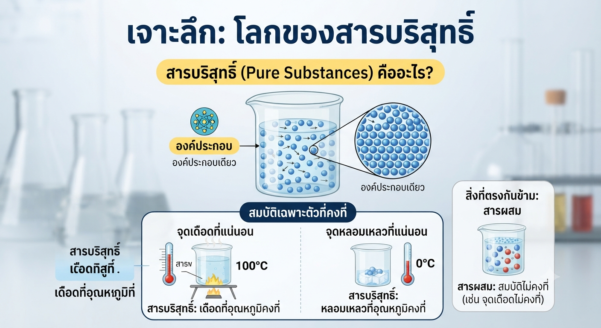
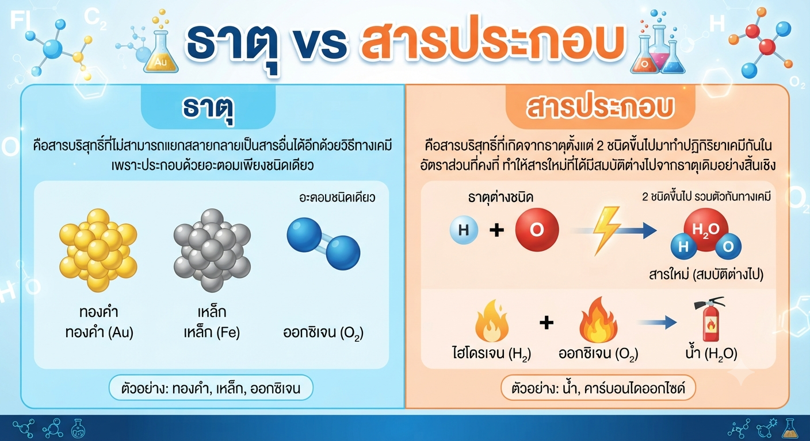
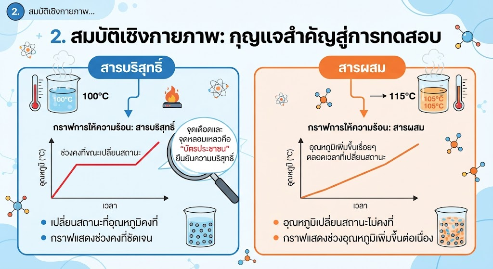
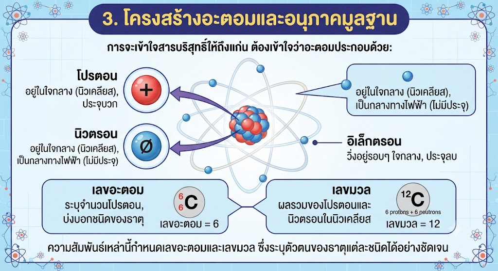

สารรอบตัวเรามีมากมายมหาศาล แต่ในทางวิทยาศาสตร์ เราแบ่งกลุ่มสารโดยใช้ "องค์ประกอบ" และ "สมบัติเฉพาะตัว" เป็นเกณฑ์ สารบริสุทธิ์คือสารที่ประกอบด้วยสารเพียงชนิดเดียวเท่านั้น ไม่มีสารอื่นปน ทำให้มีสมบัติทางกายภาพที่คงที่ เช่น จุดเดือดและจุดหลอมเหลวที่แน่นอน ซึ่งเป็นตัวตัดสินสำคัญว่าสารนั้นบริสุทธิ์หรือไม่

ธาตุ: คือสารบริสุทธิ์ที่ไม่สามารถแยกสลายกลายเป็นสารอื่นได้อีกด้วยวิธีทางเคมี เพราะประกอบด้วยอะตอมเพียงชนิดเดียว เช่น ทองคำ, เหล็ก, ออกซิเจน นักเรียนต้องจดจำตารางธาตุเบื้องต้นเพื่อให้ทราบสัญลักษณ์และสมบัติของธาตุที่เป็นโลหะ อโลหะ และกึ่งโลหะ
สารประกอบ: คือสารบริสุทธิ์ที่เกิดจากธาตุตั้งแต่ 2 ชนิดขึ้นไปมาทำปฏิกิริยาเคมีกันในอัตราส่วนที่คงที่ ทำให้สารใหม่ที่ได้มีสมบัติต่างไปจากธาตุเดิมอย่างสิ้นเชิง เช่น น้ำ เกิดจากไฮโดรเจนที่ติดไฟได้ดีและออกซิเจนที่ช่วยในการติดไฟ รวมกันกลายเป็นน้ำที่ใช้ดับไฟได้
จุดเดือดและจุดหลอมเหลวเปรียบเสมือน "บัตรประชาชน" ของสารบริสุทธิ์ หากเรานำสารหนึ่งไปต้ม กราฟอุณหภูมิที่ได้จะแสดงช่วงคงที่ขณะเปลี่ยนสถานะ (Phase Change) นั่นคือหลักฐานยืนยันความบริสุทธิ์ แต่ถ้าเป็น สารผสม อุณหภูมิจะเพิ่มขึ้นเรื่อยๆ ตลอดเวลาที่เปลี่ยนสถานะ เพราะสารแต่ละชนิดในผสมนั้นมีจุดเดือดไม่เท่ากัน

การจะเข้าใจสารบริสุทธิ์ให้ถึงแก่น ต้องเข้าใจว่าอะตอมประกอบด้วย:
ความสัมพันธ์ของอนุภาคเหล่านี้กำหนด "เลขอะตอม" และ "เลขมวล" ซึ่งระบุตัวตนของธาตุแต่ละชนิดได้อย่างชัดเจน

เทคนิคจำ:
กระบวนการคิดของติวเตอร์:
เวลาเจอโจทย์วิเคราะห์กราฟ:
Step 1: ดูแกน X (เวลา) และแกน Y (อุณหภูมิ)
Step 2: ดูช่วงที่กราฟเป็นเส้นตรงขนานกับแกน X ถ้าเจอเส้นตรงยาวๆ แสดงว่าสารนั้นกำลังเปลี่ยนสถานะ ณ อุณหภูมิคงที่ = สารบริสุทธิ์
Step 3: ระบุว่าเป็นสารประเภทใด (โลหะ/อโลหะ) โดยดูจากสมบัติการนำไฟฟ้าและการนำความร้อนประกอบ
เขียนโดย พระจอมเกล้าติวเตอร์